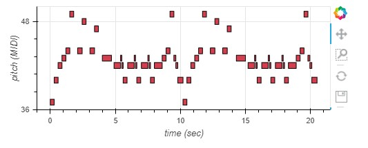
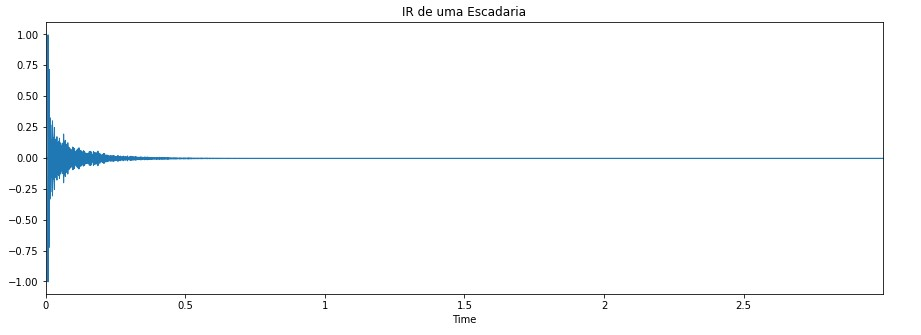

Áudio criado em MIDI
O áudio em MIDI criado é parte da introdução da música "Into the Void" da banda inglesa "Black Sabbath"

A seguir está o áudio MIDI criado
Resposta ao Impulso em diferentes ambientes

Tocando "Into the Void" nesses três ambientes.
Tocando "Into the Void" na escadaria
Tocando "Into the Void" no auditório
Tocando "Into the Void" na igreja